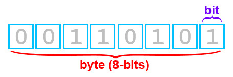
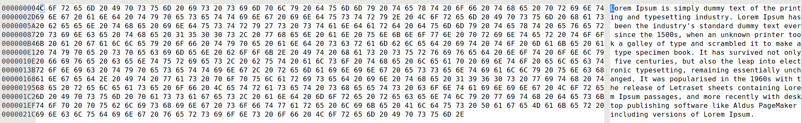
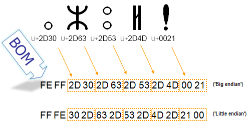

Character Encodings Overview
(╯°□°）╯︵ ┻━┻

Author: David Montaño
Agenda
- Definitions
- ASCII
- ISO_8859-{1-16}
- Windows Character Sets
- UTF-{8,16,32}
- Bibliography
Definitions
Characters
- Character: Minimal unit of text that has semantic value.
- Character Set: Collection of Characters that might be used by multiple languages.
Bytes
Codes
- Coded Character Set: Character Set in which each character corresponds to a unique number.
- Code Point: A character and this is represented by one or more code units depending on the encoding.
- Code Unit: Number of bits an encoding uses.
File
Endianness and BOM

[damontic@seven4n]$ lscpu | grep Endian
Orden de los bytes: Little Endian
ASCII
Caracteristics
[damontic@seven4n]$ man ascii
ISO_8859-{1-16}
Caracteristics
Comparison
Comparison TableWindows Character Sets
List
- Windows-1250 for Central European languages that use Latin script, (Polish, Czech, Slovak, Hungarian, Slovene, Serbian, Croatian, Bosnian, Romanian and Albanian)
- Windows-1251 for Cyrillic alphabets
- Windows-1252 for Western languages
- Windows-1253 for Greek
- Windows-1254 for Turkish
- Windows-1255 for Hebrew
- Windows-1256 for Arabic
- Windows-1257 for Baltic languages
- Windows-1258 for Vietnamese
UTF-{8,16,32}
Multi Byte representation
Util Tips
Unicode Input
- IBM personal computers: DOS, Windows
- alt codes (alt + 64)
- decimal
- Xorg
- Ctrl + Shift + u
- hexadecimal
- Platform Independent Applications
- emacs: Ctrl+x 8 Enter or Meta+x insert-char
- vim: in insert mode, the user first types Ctrl+V u, then types in the hexadecimal number of the symbol
- LibreOffice: type the hexadecimal number of a symbol and press Alt+X
Charset Detection
- Process of heuristically guessing the character encoding of a series of bytes that represent text
- Unreliable technique
- Used only when specific metadata, such as a HTTP Content-Type: header is either not available, or is assumed to be untrustworthy
- Usually involves statistical analysis of byte patterns
- UTF-{8,16} detection works well
- HTML documents must always have the Content-Type: header
- Encoding Conversion
Linux Tools
- enca
- detect and convert encoding of text files
- library: libenca.so
- iconv
- convert text from one character encoding to another
- library: glibc